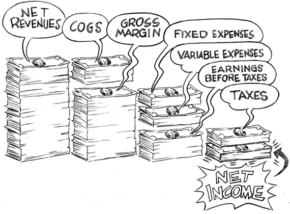
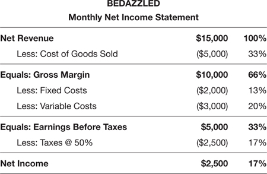

CHAPTER 2
The Net Income Statement
The Key to Growing Your Profits
As you saw in Chapter 1, the first question your financial dashboard answers is whether or not the business is making a profit. Your Net Income Statement reveals the answer to this burning question.
The bird’s-eye view of the Net Income Statement breaks down as follows:
• Net revenue (This is sales less any discounts; it’s the money coming into your company.)
• Less: Cost of goods sold (These are your direct product or service costs.)
• Gross margin (This is what’s left before operating expenses.)
• Less: Fixed expenses (These are expenses like rent.)
• Less: Variable expenses (These are expenses like marketing.)
• Earnings before taxes (EBT)
• Less: Taxes (These are expenses you can’t forget to pay!)
• Net income (This is what’s left for the business—the bottom line. This number reveals if the business is profitable and how large that profit is.)
So, once again: Net revenue minus COGS equals gross margin. Gross margin minus expenses (fixed and variable) equals EBT. EBT minus taxes equals net income. This seems very straightforward, but then, I've been trained in the trenches. The important thing—the reason for this book—is that it must become straightforward to you.
LINE ITEMS ON YOUR NET INCOME STATEMENT
To help personalize the experience of reading a Net Income Statement, I’ll put you in my business “simulator.” Congratulations! You are now the manager of a very creative company called Bedazzled, Inc. This is the name of my first small business when I was young, foolish, and, like most small business owners, had no clue how to read a Net Income Statement! Stories from that experience—O Youth, whither wentest thou?—are sprinkled throughout this book. I'm hoping that my mistakes may illuminate your decision-making process.
So, what do you do as Bedazzled’s spanking new manager? You screen-print marvelous beach cover-ups, which you sell by the thousands to some high-profile retailers and boutiques. Let’s see how Bedazzled’s net revenue is doing by looking at the individual line items on its Net Income Statement.
Net Revenue
You may have heard your CPA or some financial insider refer to your “top line.” They’re talking about that first line on your Net Income Statement. (Don’t you love it when something makes sense?) Your top line is your net revenue. It’s how much you’ve sold for that month, less any discounts you may have offered customers. For our purposes, this number is the same as net sales. Every time you ring the cash register or invoice a client, net revenue goes up. It’s a beautiful thing when money comes into your business. (For the purists out there, I acknowledge there might be other sources of revenue for a business, like interest income, but we’re keeping it simple and assuming net revenue and net sales are the same thing.)
Calculating net revenue for Bedazzled, Inc. is quite simple. Multiply how many T-shirts were sold by how much you charged for each one. Here it is in shorthand:
(# T-shirts sold) × (Unit Price) = Net Revenue
So, if one T-shirt is sold for $10.00, then net revenue is $10.00. If 1,000 T-shirts are sold for $10.00 each, net revenue is $10,000. That’s pretty straightforward. If 10 clients buy different quantities of T-shirts and the task is to determine total revenue, just add all the subtotals up from each sale, and you’ll get total net revenue for the month. All desktop or cloud software solutions will do this for you automatically. Someone in the business, either the owner, the manager, or the bookkeeper, just needs to enter each sale and deduct any discounts.
What if you have a product line with different T-shirts at different prices? Say, for example, that you offer one T-shirt with a butterfly design for $12.00 and a T-shirt with a seashell design for $15.00. Let’s compare two orders from two different customers:
• Customer A buys 20 T-shirts: 10 butterflies and 10 seashells. How much in total revenue did Customer A generate?
10 butterflies × $12.00 = $120
10 seashells × $15.00 = $150
Total Revenue from Customer A = $270
• Customer B buys 20 seashell T-shirts. How much in total revenue did Customer B generate?
20 seashells × $15.00 = $300
Total Revenue from Customer B = $300
Aha! Customer B bought the very same number of T-shirts, yet generated more in revenue—$30.00 more, to be exact. Why? Because each seashell T-shirt was a little more expensive than the butterfly T-shirt. Comparing the impact each customer has on your net revenue, it’s clear that Customer B offers more to your top line than Customer A.
Don’t be fooled, though. Even though Customer B paid more for your T-shirts, you still don’t know if Customer B is more profitable than Customer A. We only have revenue or sales information. We haven’t figured out how much each sale cost yet. This example illustrates a powerful truth: Just because one customer’s purchases are greater than another’s, it doesn’t mean that this customer is more profitable for the business. (We’ll be digging into the implications of this more.) A larger sales order doesn’t necessarily mean greater profits because the T-shirts cost something to manufacture.
The direct cost to fabricate the shirts has to be deducted from the net revenue from each order to really know how profitable each sale is and each customer is. The next line on your Net Income Statement—titled “Cost of Goods Sold”—will help identify which T-shirt design delivers the most gross margin (also known as “gross profit”) for the business. Depending on which designs a customer buys, you’ll be able to tell which customers are most profitable.
Cost of Goods Sold
Your cost of goods sold (COGS) is the total cost of the direct materials and direct labor used in the production of your products. In the case of the T-shirts, direct materials include things like fabric, yarn, and thread. Direct labor costs include screening the designs, cutting, and assembling the T-shirts. These are direct costs because they are the expenses required to build a finished product that is ready for sale. COGS is considered a direct variable cost because it varies with the number of units sold. These direct costs will look different for each product the business sells. For example, it just so happens that the seashell T-shirts require twice the amount of screen printing as the butterfly shirts, making them more expensive to manufacture. This means that the cost per unit for the seashell T-shirts is higher than the butterfly T-shirts.
It’s absolutely essential to know the unit cost for every product the company sells. This is the direct cost of materials and labor required to create a saleable product whether that product has been sold or not. Unit cost is the same as COGS for product that has been sold and shipped out the door. Unit cost is also used to measure the value of inventory, which is product that’s been made but not sold yet. A product’s unit cost may fluctuate, due to external factors such as increases in the cost of raw materials or of labor. Once a product is sold, the sale will be captured as net revenue and unit cost will be reflected as COGS on the Net Income Statement. If product has been produced but not sold, it’s considered inventory and the cost to produce it will be captured on the Balance Sheet, which we’ll review in Chapter 7. If it’s unclear what the unit cost is for each of your products, ask the accountant or bookkeeper to determine that number for you.
Knowing unit cost is essential because this is one of the key considerations when figuring out what should be charged for a product. (Other factors include your competition and operating expenses, but we’ll cover all of that in Chapter 3.)
Your price must be significantly higher than your unit costs if a product is to be profitable. If, for example, your COGS for the seashell T-shirt was $15.00 and you set your price at $5.00, the business would be losing $10.00 on every T-shirt you sold. If those T-shirts really started to sell, the business would be draining savings faster than the federal government drains its annual budget! Selling more units doesn’t lead to more profits if unit costs are too high or the selling price is too low—it actually leads to losses.
You may be asking, “Who in their right mind would sell something for less than it cost to make it?” I’ve exaggerated this example to make a point, but the truth is that far more businesspeople do this than you can imagine. Few small business managers know the true, fully loaded cost of goods of the products they are selling, so they’re pricing the product based on false assumptions. Likewise, those who manage service businesses often fail to accurately calculate their costs, especially their time. Without knowing total direct costs, setting price becomes an expensive guess.
It’s been my experience that the default is to set prices too low. Other business managers, in their desperation to find new customers, reduce the selling price below cost to entice anyone to buy. Just ask the people who use deep discounters, like Groupon, to find new customers. Almost all those businesses are losing big money on those promotions. And the customers they find are not loyal and rarely buy a second time at full price. The business loses money on the advertising expense and each product that’s sold.
Now it’s true that some businesses, at times, may need to price below cost. If a business sells perishable goods, out-of-season goods, or goods that quickly become technologically obsolete, it might make sense to sell inventory at a deep discount just to raise cash. Unless a business is selling rare diamonds or valuable antiques, most inventory decreases in value over time until it becomes worthless. It’s better to get a few cents on the dollar than nothing at all. But this should be the exception, not the rule. The rule of thumb is to sell a product at COGS plus 45 percent, to make it worth the risk to offer that product. This will also help guarantee enough gross margin from each sale to pay for the operating expenses of the business. For example: If COGS is $5.00 per unit, our markup is 45 percent of $5.00, or $2.25, and we can easily solve for minimum selling price per unit.
($5.00 COGS per unit) + ($2.25)
= Minimum Selling Price, or $7.25
The goal is to build a profitable business, not maintain an expensive hobby that will leave you in the poorhouse. Make sure the premium charged above costs is adequate to keep the business viable.
So what management decisions can be made if the price being charged for products does not adequately cover the cost to produce them? Here are three possibilities to restore profitability:
1. Raise the unit price, but only if customers are willing to pay for it.
2. Lower the COGS by re-engineering the product.
3. Drop that product from the lineup if it won’t sell at a price high enough to cover the COGS plus a 45 percent premium.
If it’s possible to raise unit price and lower COGS while maintaining sales, you’ve hit the jackpot! A solid, integrated marketing strategy might provide the way to do this. Just remember, if the business promotes products to increase sales when the unit price is too close to the product’s cost, that business will sink into a deeper financial hole. Don’t get caught in the trap of losing money on every sale and attempting to make it up in volume. That’s never a viable option. Likewise, don’t get caught hanging onto products that are not generating adequate gross margin.
Every product or service offered has to deliver at least a 45 percent premium above what it costs to make it or to deliver it. Forget about those products or services everyone wants but is unwilling to pay for, or the products you love but customers won’t buy. They will kill the profit potential of the business.
Gross Margin
Okay, we’ve covered the first two lines on the Net Income Statement. You have a general idea of how net revenue is generated and calculated. You know what COGS is and how it should help determine unit prices. It’s clear that prices charged must be at least 45 percent higher than the COGS if the goal is to deliver a positive bottom line, or net income, the sign the business is profitable. After we deduct COGS from net revenue we’re left with gross margin, or gross profit, not net income. Why? Because gross margin hasn’t accounted for all the expenses to run the business yet. “Gross margin” is also referred to as “contribution margin” or just “margin” for short. Just remember that “gross margin,” “gross profit,” “contribution margin,” and “margin” all refer to the same thing—the premium that’s left after COGS (unit cost) is deducted from net revenue. It’s that 45 percent premium over unit costs discussed earlier. Although it may vary slightly from industry to industry, the hurdle rate for gross margin is that it be equal to or greater than 30 percent of the net revenue. If your gross margin is less than 30 percent of net revenue, the company may run into trouble.
The Net Income Statement is the only statement that measures gross margin, and it’s critically important that you know this number. Why? A business doesn’t run on net revenue; it runs on gross margin. The gross margin is what is used to pay all the operating or indirect expenses to keep the business humming. These expenses typically include (but are not limited to) rent, insurance, salaries (including your own!), other general and administrative expenses, professional fees (accountants and lawyers), and, last but not least, city, state, and federal taxes.
Say, for example, that each seashell T-shirt costs $5 to make. If each one is sold for $15, how much gross margin was made on each T-shirt?
$15.00 (Unit Price) – $5.00 (Unit COGS)
= $10.00 Unit Gross Margin
That means for every T-shirt sold, the business generates $10.00 to help pay all the operating expenses. If 1,000 T-shirts are sold with this same pricing and cost structure, the business will generate $10,000 in gross margin:
1,000 Units × $10.00 Gross Margin per Unit
= $10,000 Gross Margin
Now we’ve got some pocket change to run the company. Actually, more than just pocket change. I admit that these are wonderfully positive figures. (Bedazzled’s T-shirts had copyrighted designs and were easily sold at a premium.) As it happens, having such a positive gross margin puts you miles ahead of some companies, including a few big ones.
Take, for example, the infamous Chevy Volt. When the Volt was first introduced, it cost General Motors $79,000 to make the car. That monstrous number did not include the engineering costs to design and develop the car, just the direct costs to manufacture it. Chevy set the retail price for the Volt at $49,000 to try to be competitive with other electric cars in its class. If you’ve been tracking, this means that the Volt generated a negative gross margin of $39,000 at launch.
GM did what you should avoid like the plague—selling a product at almost half the true cost to make it. At that rate, the government should have subsidized GM not to make the car. It might actually have been cheaper to keep the plants idle and pay employees full wages while saving the direct materials costs. Clearly, profitability was not the aim, but you get the idea.
Besides the massive negative gross margin, Chevy had another big problem. The Volt’s retail price—$49,000—wasn’t even in the same solar system as its competitor made by Toyota, which sold for $29,000. So not only did GM make a car it couldn’t afford to sell, but customers would never buy the Volt because it had no hope of beating the competition. That’s a product that fired on no cylinders. What does this story tell us? The unit price for a product must cover COGS plus a 45 percent premium—and that the retail price needs to be competitive with attractive options currently in the market.
Even the big companies can get it terribly wrong. Now you know what negative gross margin looks like in the automobile business.
Repeat after me: Every product or service must have a gross margin of at least 30 percent of net revenue or 45 percent above cost of goods sold.
You can get to gross margin two ways: by using net revenue per unit as the reference or by using COGS per unit as the reference. I prefer using the COGS method as a first line of approach, because you start with your true costs and add your premium. If you find this forces you to charge more than the market will bear, you will have a good handle on the process and can better figure out how to modify it (lower your costs) without sacrificing quality (and possibly hurting your brand) or of improving the value of the product or service so the higher retail price becomes worth it in the eyes of your prospective customers.
Using Net Revenue to Determine Maximum COGS and Minimum Gross Margin
Assume butterfly T-shirts sell for $12.00 each. That’s $12.00 net revenue per shirt. The goal is for gross margin to be 30 percent of $12.00, or $3.60 per shirt. That means COGS can be no more than $8.40 per shirt.
Putting this another way, if 30 percent gross margin is the goal, COGS cannot be higher than 70 percent of selling price (net revenues).
Using COGS to Determine Selling Price and Minimum Gross Margin
The COGS for Bedazzled T-shirts our first season was off the charts at $15.00 per shirt. Using our 45 percent markup as a rule of thumb, we would have had to sell our T-shirts for $21.75 in order for us to protect a 30 percent gross margin. We did sell some to a few high-end boutiques, but we didn’t sell lots of them. In our second season, we chose to simplify the design in order to lower the COGS. We did this by screen-printing equally beautiful but much simpler designs. We cut screen-printing costs in half and reduced damages by 70 percent by changing suppliers, reducing COGS to less than $7.50 per shirt.
If the only information known is the COGS at $7.50 per unit, add 45 percent to get to the minimum selling price per unit to protect a minimum 30 percent gross margin. In our second season with Bedazzled, because we managed to reduce COGS so dramatically, we were able to sell our T-shirts for $10.87, which we rounded up to $11.00. That’s almost half the price we were selling the T-shirts for our first season. And we sold thousands of more T-shirts as a result.
Whatever course you choose, don’t sell the T-shirt for less than COGS plus 45 percent. That’s the only way the business will generate enough gross margin to pay operating costs—fixed expenses, indirect variable expenses, and taxes—and generate positive profits.
Let’s recite our mantra once again. Repeat after me: Every product or service must have a gross margin of at least 30 percent of net revenue or 45 percent above cost of goods sold.
Fixed Expenses
The next line on the Net Income Statement reads “Fixed Expenses.” Fixed expenses do not change with fluctuations in sales volume. Whether sales are strong, weak, or nonexistent, these expenses must be paid. These, as their name suggests, are going to stay the same no matter how many T-shirts are sold. Rent is an example of a fixed expense. Imagine that the business is renting some space and there’s a month when the business doesn’t generate much in sales. What would happen if you called the landlord and said, “Hey, Fred. We’ve had a tough February. Is it okay if we don’t pay the rent this month?”
As Dr. Peter Wood, President of the National Association of Scholars, would say, that would go down “like a stinging nettles and wasabi sandwich.” The landlord doesn’t care. He just wants to get paid. If the business didn’t sell any T-shirts that month, that’s your problem. The rent bill is still due. That’s a fixed expense.
Another pleasant way to think of fixed expenses is to imagine each one as a heavy noose around your neck that tightens if net revenue starts to falter. That’s why the goal is to keep fixed expenses as low as possible for as long as possible. The lower the fixed expenses, the fewer T-shirts you need to sell to cover these expenses.
One of the smartest and most successful small business investors I ever met gave me this admonition: “Don’t ever chase fixed overhead.” He was essentially saying, don’t take on fixed expenses that require the business to scramble to generate more sales to pay for them. Grow sales faster than fixed expenses. The time to take on more fixed expenses is when the orders are in your hands and the business has to scramble to get the orders out. The best managers take on fixed expenses when the marketplace has already voted for their products by purchasing them. Let net revenue and gross margin drive the right level of expenses, not the other way around. This is the Holy Grail of small business management.
Variable Expenses
Variable expenses, the next category of expenses on the Net Income Statement, tend to vary based on sales volume. And that’s why they’re called “variable.” But these are actually indirect variable expenses. (Remember, COGS is considered a direct variable expense, and as such—by convention—has its own line on the Net Income Statement.) As more T-shirts are sold, indirect variable expenses (sales commissions, marketing expenses, etc.) tend to climb. If fewer T-shirts are sold, variable expenses should be reduced.
Some variable expenses are a lot easier to control than fixed expenses. If the business has a soft month in sales, it’s usually easier and faster to reduce variable expenses like advertising (a marketing expense) than fixed expenses like the rent or salaries. Rental leases are usually a mid- to long-term commitment and are difficult to terminate when net revenue goes down, while hiring a social-media guru, for example, is usually a short-term commitment and one you can cancel pretty easily. Direct mail or email campaigns are also examples of variable expenses that can be scaled back if revenues are soft.
Two variable expenses that deserve mention are depreciation and interest expense. You may or may not have these for the business you manage; just know what they are and how they work.
Depreciation
When you buy an expensive asset, or an asset that has a multi-year useful life, like a piece of equipment or even a building, our friends at the Internal Revenue Service have rules about how to count these large purchases as business expenses. Typically, a portion of the total expense is deducted each year according to a schedule over the useful life of that asset until the total original cost is accounted for. That partial expense recognition is called depreciation and you’ll often see that as a budget line on a Net Income Statement. This is not a cash expense, but a true cost of doing business. At some point, the business will have to renovate the building and replace that worn-out equipment or computer.
Why do we need to depreciate these expenses instead of just showing the total cost on the Net Income Statement the year it was purchased? Because you don’t “use up” an asset like a computer in one year, so you don’t expense the entire cost of the computer on your Net Income Statement in the year you purchased it. It typically has a useful three-year life. There are conventions for depreciating various kinds of assets. Depreciation expense can be the same or vary year to year and can show up as either a fixed or variable expense, depending on the depreciation method determined by the accountant. It helps reduce the tax expense for the business in the years depreciation is recognized because it reduces earnings before taxes and therefore the amount of taxes a company pays. It shows up as a fixed expense year after year until the underlying long-term asset is fully depreciated. Paying less in taxes also helps to conserve cash, a very useful thing when cash is tight. We’ll get into that in Chapter 5 when we introduce you to the Cash Flow Statement. The accountant will know all this and more. Don’t sweat it. Just know that depreciation exists and it shows up as either a fixed or variable expense before earnings and before taxes are calculated. The next time you see this as a line item on a Net Income Statement, it won’t be a stranger.
Interest Expense
The other variable expense that deserves mention is interest expense. If a loan or a credit line has been taken out for purchases made on behalf of the business, the cost of that short-term debt (paid within a year) is the interest expense paid. This interest expense shows up on the Net Income Statement on a line called—believe it or not—“Interest Expense.”
Interest expense paid on long-term debt like a mortgage also gets accounted for on the Net Income Statement each month as it gets paid. (Don’t be confused by the fact that these payments feel to you like fixed expenses; your accountant knows in which category to count it, and that’s what’s important to the IRS and your more savvy investors.) In summary, interest expenses on both short-term and long-term debt will show up on your Net Income Statement and will reduce operating income and profits. (We’ll talk more about how and when to take on debt in Chapter 8.)
Earnings Before Taxes
If fixed and variable expenses are deducted from total gross margin, we’re left with earnings before taxes (EBT). The government makes a distinction before and after taxes, and so should you. Earnings before taxes are not profits. They are simply earnings from operations before taxes are paid to Uncle Sam, the state, and the municipality in which the business operates. There is a lot more to this subject, but for now, know that taxes are paid out of earnings before taxes.
Nothing affects how much profit a small business makes more than the tax line on the Net Income Statement. Anywhere from 40 percent to 50 percent of earnings is usually paid in taxes. For this reason, when taxes rise by even a few percentage points, it wipes out much of your profit (you probably know this already). Taxes are the last expense line on the Net Income Statement and they are typically one of the highest costs of doing business.
Small business managers often try to minimize EBT in order to minimize tax expense. That makes sense in the short term, but if the destiny of a business is to be sold, the selling price will be far lower than it would have been had the Net Income Statement shown higher operating profits over the years. Be sure to ask the accountant about this if selling the business is eventually the goal. There are several legitimate ways to calculate depreciation expense, for example, that will affect operating profit in both the short and long term. It all depends on what the endgame is. For me, I like to get a return on investment. If I’m investing years of effort into a company, it should be worth something at the end of all those years of sweat and toil.
Taxes
I promised you this book was not going to speak about tax laws and regulations and that we won’t get into the weeds, but there are some basics you need to be aware of. You have accountants and lawyers to help wade through the details. Just know, in the United States a business will have to pay federal taxes. It may have to pay state taxes and, in some cases, it may also have to pay municipal or city taxes. As you can now see, tax rates have a profound influence on the size of the bottom line. It’s the last expense line before net income. More than almost any other line item on the Net Income Statement, tax rates determine net income. When you hear about companies like Apple Computer relocating to Austin, Texas, or companies moving to Florida at the rate of 200 per month, last I heard, they are doing so because the tax rates are much more favorable for businesses there.
Net Income
Okay, let’s review. After we’ve captured net revenue and deducted cost of goods sold (direct variable expenses), we’re left with total gross margin. Then we deducted fixed expenses, indirect variable expenses, and taxes. This leaves us with a final number: net income—also known as “net profit” or “the bottom line.” These three terms all refer to exactly the same thing.

Businesses do not exist to break even or to show a loss for an extended period of time. If a business serves customers superbly, offers creative solutions, and takes on risk, it should be compensated for that. Positive net income is the key to staying in business. The profit mandate must be a priority if a business is to remain viable.
So let’s see if Bedazzled, Inc. is generating positive net income. This month the business sold 1,000 T-shirts. Each T-shirt was sold for $15.00. It cost $5.00 to make each T-shirt. Fixed expenses this month were $2,000, and variable expenses were $3,000. Taxes are 50 percent of earnings. This is shown in Figure 2–1. How much profit did the business make this month? Drum roll, please:

FIGURE 2–1
Woohoo! The business is profitable. It has generated a positive $2,500 in net income on the books at the end of this month. If net income is positive, the business is making money.
Just how profitable is it? That 17 percent on the right next to the net income number means that 17 cents of every dollar of net revenue is net profit. That doesn’t seem like a lot of money, does it? Well, it’s really not bad. If you managed the corner grocery store, for example, the bottom line would be more like two cents. That’s right. For every dollar the neighborhood grocer takes in, it typically earns two cents—or even less sometimes. Next time you go food shopping, count your blessings that someone has the motivation to build a store, stock it, staff it, and maintain it so we can get our daily fix of coffee, eggs, and milk.
What if net income is negative? You guessed it. It would mean that you’re losing money. Does this mean you’ll soon be closing your doors? Not necessarily. You can weather a few lean periods and still stay in business. In fact, every business shows ups and downs in profit from month to month, because industries have different rhythms. If you’re managing a retail store, the business will generate big sales in November and December, around the holidays. If you’re managing a beach resort, the business makes most of its money from December through February, when snowbirds have had just about enough of shoveling snow. If you’re managing a restaurant, it’s best to be open on Saturdays, because that’s when most customers are more likely to eat out, so Saturdays are high revenue days. In the strong net revenue months, profits will probably be positive. When net revenue is weak, monthly profit numbers might be negative due to the drag effect of fixed costs that, like rent, are always present whether a lot or a little is sold.
The goal is to show consistent profitability on a quarterly basis. The business can tolerate a lean month, but the goal is to adjust course and show a profit by the end of the quarter. If not, the business is heading for trouble. In the long term, a business can’t continue to lose money and remain viable. If profits are negative for three months or more, something in the business is shaky and it needs to be fixed fast.
It’s important to track net revenue and operating costs—indirect variable expenses—each month to identify where the problems are. If gross margin is not at or above 30 percent of net revenue, then look at what customers are buying, what price the business is charging, and what the cost of goods are. If the gross margin is fine but EBT is trending lower, then take a look at how much is being spent on fixed and variable expenses and find creative ways to drive them down. Ask how other businesses in your industry are managing those costs. Knowing the company’s pattern of revenues and expenses also helps prepare for the lean months instead of being surprised by them. (Chapter 5 about the Cash Flow Statement will also help you do this.)
MANAGEMENT BENCHMARKS
Now that it’s clear what the Net Income Statement is and what it measures, here are some benchmarks to help manage the business toward profitability month-to-month.
First, have the accountant or bookkeeper print a Net Income Statement of the business every month, typically after all sales and expenses for the month have been reconciled. Go over it line by line, just like we did in this chapter. Break it down until it makes sense to you. Don’t be afraid to ask the accountant or bookkeeper to explain some of the numbers. (Accountants aren’t perfect either and we didn’t cover every possible type of expense here.)
Once you understand the numbers, now look at how the business is trending. Go back to Figure 2–1. Take a good look at the right-hand column that shows percentages. Everything is calculated off net revenue, which is shown as “100%,” because that’s the starting point.
Net revenue will always be the reference point for key ratios. Again, it’s important to manage gross margin to be 30 percent or higher of total net revenue and COGS to be 70 percent of net revenue or lower. As a rule of thumb, fixed expenses should be managed to around 20 percent of net revenue and variable costs around the same level, around 20 percent, depending on the industry and how long the business has been operating
If the business can come close to hitting some of these benchmarks, that’s terrific. Be aware that as net revenues rise, expenses will typically rise as well to scale the business to service more customers. In order to stay ahead, the key is to build revenues faster than expenses. Many new businesses, even those well funded, let expenses grow too quickly and burn out before revenues can cover those expenses.
Keep fixed expenses as low as possible until the business has a stable customer base that buys regularly. Keep running the business out of a basement, car, or living room—or on top of your head—as long as possible before you sign a lease to rent space. (There’s a reason Apple Computer was started out of a garage in Cupertino, California.)
Only add products or services to the company’s offering that generate at least 30 percent gross margin based on the price and the cost of making or delivering that product (COGS). Every product offered should improve gross margin, not degrade it. You can’t make it up in volume. Please don’t try.
In Chapter 3, we’ll look at Net Income Statements from different kinds of businesses. The light bulb over your head will go off and you’ll know what you need to change in any business to make it sing. Trust me. I’ve seen it happen in the real world thousands of times. Now it’s your turn.
KEY TAKEAWAYS
 The Net Income Statement reveals whether the business is showing a profit or a loss. If your net income or bottom line is positive, the business is making money; negative, the business is losing money.
The Net Income Statement reveals whether the business is showing a profit or a loss. If your net income or bottom line is positive, the business is making money; negative, the business is losing money.
 The top line on the Net Income Statement is net revenue. That’s where monthly sales are captured.
The top line on the Net Income Statement is net revenue. That’s where monthly sales are captured.
 The second line on the Net Income Statement is cost of goods sold (COGS). These are the direct costs to create a finished product that is saleable. It includes direct labor and direct materials.
The second line on the Net Income Statement is cost of goods sold (COGS). These are the direct costs to create a finished product that is saleable. It includes direct labor and direct materials.
 If the COGS is known, but selling price is not, remember that the business must be able to sell the item for COGS plus a 45 percent premium to be worth the while. If the marketplace won’t pay that price, consider dropping that product from the lineup or changing its cost structure.
If the COGS is known, but selling price is not, remember that the business must be able to sell the item for COGS plus a 45 percent premium to be worth the while. If the marketplace won’t pay that price, consider dropping that product from the lineup or changing its cost structure.
 Selling products at prices below COGS should be done only to flush out degrading inventory and only for a very brief time.
Selling products at prices below COGS should be done only to flush out degrading inventory and only for a very brief time.
 The third line on the Net Income Statement is gross margin, or gross profit. It should equal at least 30 percent of net revenue in order to generate enough gross profit to pay fixed and variable expenses.
The third line on the Net Income Statement is gross margin, or gross profit. It should equal at least 30 percent of net revenue in order to generate enough gross profit to pay fixed and variable expenses.
 Adequate gross margin is key to running a profitable business and must be measured every month. The Net Income Statement is the only statement that tracks this.
Adequate gross margin is key to running a profitable business and must be measured every month. The Net Income Statement is the only statement that tracks this.
 Fixed expenses don’t change with sales volume. Keep these at a minimum and no more than 20 percent of net revenue each month.
Fixed expenses don’t change with sales volume. Keep these at a minimum and no more than 20 percent of net revenue each month.
 Variable expenses trend higher as the business sells to more customers. Keep these expenses to no more than 20 percent of net revenue to make sure they don’t get out of control.
Variable expenses trend higher as the business sells to more customers. Keep these expenses to no more than 20 percent of net revenue to make sure they don’t get out of control.
 Earnings before taxes is the subtotal after every cost except for taxes is deducted from net revenues. If EBT is at least 10 percent of net revenue, then net income will probably be in a healthy range.
Earnings before taxes is the subtotal after every cost except for taxes is deducted from net revenues. If EBT is at least 10 percent of net revenue, then net income will probably be in a healthy range.
 Taxes are paid out of earnings before taxes. A good rule of thumb is to manage net income so that it yields at least 5 percent of net revenue. That means for every dollar of sales, the business generates at least five cents in net profit, or bottom line.
Taxes are paid out of earnings before taxes. A good rule of thumb is to manage net income so that it yields at least 5 percent of net revenue. That means for every dollar of sales, the business generates at least five cents in net profit, or bottom line.
 Delivering positive bottom line numbers consistently every quarter is the key to long-term success.
Delivering positive bottom line numbers consistently every quarter is the key to long-term success.